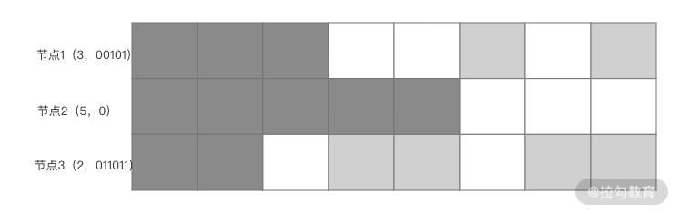

- 00 开篇词 吃透分布式数据库，提升职场竞争力.md.html
- 01 导论：什么是分布式数据库？聊聊它的前世今生.md.html
- 02 SQL vs NoSQL：一次搞清楚五花八门的“SQL”.md.html
- 03 数据分片：如何存储超大规模的数据？.md.html
- 04 数据复制：如何保证数据在分布式场景下的高可用？.md.html
- 05 一致性与 CAP 模型：为什么需要分布式一致性？.md.html
- 06 实践：设计一个最简单的分布式数据库.md.html
- 07 概要：什么是存储引擎，为什么需要了解它？.md.html
- 08 分布式索引：如何在集群中快速定位数据？.md.html
- 09 日志型存储：为什么选择它作为底层存储？.md.html
- 10 事务处理与恢复（上）：数据库崩溃后如何保证数据不丢失？.md.html
- 11 事务处理与恢复（下）：如何控制并发事务？.md.html
- 12 引擎拓展：解读当前流行的分布式存储引擎.md.html
- 13 概要：分布式系统都要解决哪些问题？.md.html
- 14 错误侦测：如何保证分布式系统稳定？.md.html
- 15 领导选举：如何在分布式系统内安全地协调操作？.md.html
- 16 再谈一致性：除了 CAP 之外的一致性模型还有哪些？.md.html
- 17 数据可靠传播：反熵理论如何帮助数据库可靠工作？.md.html
- 18 分布式事务（上）：除了 XA，还有哪些原子提交算法吗？.md.html
- 19 分布式事务（下）：Spanner 与 Calvin 的巅峰对决.md.html
- 20 共识算法：一次性说清楚 Paxos、Raft 等算法的区别.md.html
- 21 知识串讲：如何取得性能和可扩展性的平衡？.md.html
- 22 发展与局限：传统数据库在分布式领域的探索.md.html
- 23 数据库中间件：传统数据库向分布式数据库的过渡.md.html
- 24 现状解读：分布式数据库的最新发展情况.md.html
- 加餐1 概念解析：云原生、HTAP、图与内存数据库.md.html
- 加餐2 数据库选型：我们该用什么分布式数据库？.md.html
- 捐赠
17 数据可靠传播：反熵理论如何帮助数据库可靠工作？
上一讲我们完整地介绍了一致性的概念，其中一致性程度最低的是最终一致性。在最终一致性的条件下，节点间需要经过一段时间的数据同步，才能将最新数据在节点间进行分发。这就需要这些最新产生的数据能在节点间稳定地传播。
但是，现实是非常无情的，数据传播中会遇到各种故障，如节点崩溃失败、网络异常、同步数据量巨大造成延迟高等情况，最终会造成最终一致性集群内部节点间数据差异巨大。随着时间的推移，集群向着越来越混乱的局面恶化。
以上描述的场景就是“熵增”。这是一个物理学概念，在 2020 年上映的影片“Tenet”中，对“熵”的概念有过普及，其中把熵描述为与时间有关，好像熵增就是正向时间，熵减就是时间倒流。
其实熵与时间之间是间接关系。19 世纪的时候，科学家发现不借助外力，热力总是从高温物体向低温物理传播，进而出现一个理论：在封闭系统内且没有外力作用下，熵总是增的。而时间也是跟随熵增一起向前流动的。影片假设，如果能将熵减小，时间就应该可以随之倒流。
熵的概念深入了各个领域中，一般都表示系统总是向混乱的状态变化。在最终一致性系统中，就表示数据最终有向混乱方向发展的趋势，这个时候我们就要引入“反熵”机制来施加“外力”，从而消除自然状态的“熵增”所带来的影响。
说了这么多，简而言之，就是通过一些外部手段，将分布式数据库中各个节点的数据达到一致状态。那么反熵的手段包含：前台同步、后台异步与 Gossip 协议。现在让我来一一为你介绍。
前台同步
前台同步是通过读与写这两个前台操作，同步性地进行数据一致性修复。它们分别称为读修复（Read Repair）和暗示切换（Hinted Handoff）。
读修复
随着熵逐步增加，系统进入越来越混乱的状态。但是如果没有读取操作，这种混乱其实是不会暴露出去的。那么人们就有了一个思路，我们可以在读取操作发生的时候再来修复不一致的数据。
具体操作是，请求由一个总的协调节点来处理，这个协调节点会从一组节点中查询数据，如果这组节点中某些节点有数据缺失，该协调节点就会把缺失的数据发送给这些节点，从而修复这些节点中的数据，达到反熵的目的。
有的同学可能会发现，这个思路与上一讲的可调节一致性有一些关联。因为在可调节一致性下，读取操作为了满足一致性要求，会从多个节点读取数据从而发现最新的数据结果。而读修复会更进一步，在此以后，会将落后节点数据进行同步修复，最后将最新结果发送回客户端。这一过程如下图所示。

当修复数据时，读修复可以使用阻塞模式与异步模式两种。阻塞模式如上图所示，在修复完成数据后，再将最终结果返还给客户端；而异步模式会启动一个异步任务去修复数据，而不必等待修复完成的结果，即可返回到客户端。
你可以回忆一下，阻塞的读修复模式其实满足了上一讲中客户端一致性提到的读单增。因为一个值被读取后，下一次读取数据一定是基于上一次读取的。也就是说，同步修复的数据可以保证在下一次读取之前就被传播到目标节点；而异步修复就没有如此保证。但是阻塞修复同时丧失了一定的可用性，因为它需要等待远程节点修复数据，而异步修复就没有此问题。
在进行消息比较的时候，我们有一个优化的手段是使用散列来比较数据。比如协调节点收到客户端请求后，只向一个节点发送读取请求，而向其他节点发送散列请求。而后将完全请求的返回值进行散列计算，与其他节点返回的散列值进行比较。如果它们是相等的，就直接返回响应；如果不相等，将进行上文所描述的修复过程。
这种散列模式的一个明显好处是在系统处于稳定的状态时，判断数据一致性的代价很小，故可以加快读取速度并有效降低系统负载。常用的散列算法有 MD5 等。当然，理论上散列算法是有碰撞的可能性的，这意味着一些不一致状态无法检测出来。首先，我们要说在真实场景中，这种碰撞概率是很低的，退一万步讲，即使发生碰撞，也会有其他检测方来修复该差异。
以上就是在读取操作中进行的反熵操作，那么在写入阶段我们如何进行修复呢？下面我来介绍暗示切换。
暗示切换
暗示切换名字听起来很玄幻。其实原理非常明了，让我们看看它的过程，如下图所示。

客户端首先写入协调节点。而后协调节点将数据分发到两个节点中，这个过程与可调节一致性中的写入是类似的。正常情况下，可以保证写入的两个节点数据是一致的。如果其中的一个节点失败了，系统会启动一个新节点来接收失败节点之后的数据，这个结构一般会被实现为一个队列（Queue），即暗示切换队列（HHQ）。
一旦失败的节点恢复了回来，HHQ 会把该节点离线这一个时间段内的数据同步到该节点中，从而修复该节点由于离线而丢失的数据。这就是在写入节点进行反熵的操作。
以上介绍的前台同步操作其实都有一个限制，就是需要假设此种熵增过程发生的概率不高且范围有限。如果熵增大范围产生，那么修复读会造成读取延迟增高，即使使用异步修复也会产生很高的冲突。而暗示切换队列的问题是其容量是有限的，这意味着对于一个长期离线的节点，HHQ 可能无法保存其全部的消息。
那么有没有什么方式能处理这种大范围和长时间不一致的情况呢？下面我要介绍的后台异步方式就是处理此种问题的一些方案。
后台异步
我们之前介绍的同步方案主要是解决最近访问的数据，那么将要介绍的后台异步方案主要面向已经写入较长时间的数据，也就是不活跃的数据。进而使用这种方案也可以进行全量的数据一致性修复工作。
而后台方案与前台方案的关注点是不同的。前台方案重点放在修复数据，而后台方案由于需要比较和处理大量的非活跃数据，故需要重点解决如何使用更少的资源来进行数据比对。我将要为你介绍两种比对技术：Merkle 树和位图版本向量。
Merkle 树
如果想要检查数据的差异，我们一般能想到最直观的方式是进行全量比较。但这种思路效率是很低的，在实际生产中不可能实行。而通过 Merkle 树我们可以快速找到两份数据之间的差异，下图就是一棵典型的 Merkle 树。

树构造的过程是：
- 将数据划分为多个连续的段。而后计算每个段的哈希值，得到 hash1 到 hash4 这四个值；
- 而后，对这四个值两两分组，使用 hash1 和 hash2 计算 hash5、用 hash3 和 hash4 计算 hash6；
- 最后使用 hash5 和 hash6 计算 top hash。
你会发现数据差异的方式类似于二分查找。首先比较两份数据的 top hash，如果不一致就向下一层比较。最终会找到差异的数据范围，从而缩小了数据比较的数量。而两份数据仅仅有部分不同，都可以影响 top hash 的最终结果，从而快速判断两份数据是否一致。
Merkle 树结合了 checksum 校验与二叉树的特点，可以帮助我们快速判断两份数据是否存在差异。但如果我们想牺牲一定精准性来控制参与比较的数据范围，下面介绍的位图版本向量就是一种理想的选择。
位图版本向量
最近的研究发现，大部分数据差异还是发生在距离当前时间不远的时间段。那么我们就可以针对此种场景进行优化，从而避免像 Merkle 树那样计算全量的数据。而位图版本向量就是根据这个想法发展起来的。
这种算法利用了位图这一种对内存非常友好的高密度数据格式，将节点近期的数据同步状态记录下来；而后通过比较各个节点间的位图数据，从而发现差异，修复数据。下面我用一个例子为你展示这种算法的执行过程，请看下图。

如果有三个节点，每个节点包含了一组与其他节点数据同步的向量。上图表示节点 2 的数据同步情况。目前系统中存在 8 条数据，从节点 2 的角度看，每个节点都没有完整的数据。其中深灰色的部分表明同步的数据是连续的，我们用一个压缩的值表示。节点 1 到 3 这个压缩的值分别为 3、5 和 2。可以看到节点 2 自己的数据是连续的。
数据同步一旦出现不连续的情况，也就是出现了空隙，我们就转而使用位图来存储。也就是图中浅灰色和白色的部分。比如节点 2 观察节点 1，可以看到有三个连续的数据同步，而后状态用 00101 来表示（浅灰色代表 1，白色代表 0）。其中 1 是数据同步了，而 0 是数据没有同步。节点 2 可以从节点 1 和节点 3 获取完整的 8 条数据。
这种向量列表除了具有内存优势外，我们还可以很容易发现需要修复数据的目标。但是它的一个明显缺点与暗示切换队列 HHQ 类似，就是存储是有限的，如果数据偏差非常大，向量最终会溢出，从而不能比较数据间的差异。但不要紧，我们可以用上面提到的 Merkle 来进行全量比较。
以上我介绍了一些常见的反熵手段，它们都可以很好地解决数据一致性问题。但是我们会发现相对于传统的领导节点数据同步，它们同步数据的速度是不好度量的，而且会出现部分节点长期不进行同步的状态。那么有没有一种模式可以提高数据同步的效率呢？答案是肯定的，那就是 Gossip 协议。
Gossip 协议
Gossip 协议可以说是传播非常广泛的分布式协议。因为它的名字非常地形象，用幽默的东北话来说就是“传闲话”。大家可以想象一个东北乡村，屯头树下大家聚在一起“张家长李家短”。一件事只需一会儿整个村庄的人都全知道了。
Gossip 协议就是类似于这种情况。节点间主动地互相交换信息，最终达到将消息快速传播的目的。而该协议又是基于病毒传播模型设计的。2020 年是新冠疫情的灾年，大家都对病毒传播有了深刻理解，那么我现在就用病毒传播模型来解释 Gossip 协议的消息传播模式。
最开始，集群中一个节点产生了一条消息，它的状态为“已感染”。而其他节点我们认为是“易感节点”，这类似于新冠的易感人群。一旦该消息从已感染节点传播到易感节点，这个易感节点把自己的状态转换为已感染，而后接着进行传播。
这里，选择传播的目标使用一个随机函数，从而可以很好地将“病毒”扩展到整个集群中。当然，如果已感染节点不愿意传染其他节点，类似于它被隔离了起来，在其上的消息经过一段时间后会被移除。
我们可以看到 Gossip 模式非常适合于无主集群的数据同步，也就是不管集群中有多少节点参与，消息都可以很健壮地在集群内传播。当然，消息会重复传播到同一个节点上，在实现算法的时候，我们需要尽量减少这种重复数据。
另一个对算法成败重要的影响因素是消息用多快的速度在集群内传播，越快传播不仅会减少不一致的时间，同时可以保证消息不容易丢失。现在我通过几个特性来描述算法的行为。
- 换出数量。它表示为节点选择多少个相邻节点来传播数据。我们很容易知道，当这个值增大后，数据就能更快地传播。但这个值增大同样会增加重复数据的比例，从而导致集群负载增加吞吐量下降。所以我们需要对重复数据进行监控，来实时调整换出数量。
- 传播延迟。这种延迟与我们之前提到的复制延迟不同，它描述的是消息传播到集群中所有节点所需要的时间。它取决于换出数量和集群规模。在一个规模比较大的集群中，我们应该适当提高换出数量，而降低数据传播的延迟。
- 传播停止阈值。当一个节点最近总是收到重复的数据，我们就应该考虑减弱甚至停止这个数据在集群中的传播了，这种过程被形象地称为“兴趣减弱”。我们一般需要计算每个节点重复的数量，并通过一个阈值来确定该数据是否需要停止传播。
以上就是 Gossip 传播模式的一些特点，但是在实际生产中，我们不能完全用随机的模式构造传播网络，那样的话会造成网络信息过载。我们一般会采用一些网络优化的手段。
网络优化
我们刚才提到 Gossip 协议成功的关键之一是控制重复消息的数量，但同时一定程度的重复数量可以保障消息的可用性，从而使集群更加稳健。
一种平衡的方案是构造一个临时的稳定拓扑网络结构。节点可以通过检测发现与其网络相对稳定的节点，从而构建一个子网。子网之间再互相连接，从而构建一个单向传播且无环的树形拓扑结构。这就达到如存在主节点网络一般的传播结构，这种结构可以很好地控制重复的消息，且保证集群中所有节点都可以安全地接收数据。
但是这种结构存在明显的弱点，也就是连接子网之间的节点会成为潜在的瓶颈。一旦这类节点失败，那么子网就会变为信息孤岛，从而丧失 Gossip 算法所带来的稳健性特点。
那有没有一种算法能解决这种孤岛问题呢？我们可以使用混合模式来解决，也就是同时使用树结构与传统 Gossip 随机传播结构。当系统稳定运行时，使用树结构加快信息的传播速度，同时减小重复数据。一旦检测到失败，那么系统退化为 Gossip 模式进行大范围信息同步，来修复失败问题。
总结
最终一致性允许节点间状态存在不一致，那么反熵机制就是帮助最终一致性来修复这些不一致情况的。
我们既可以使用前台的读修复和暗示切换来快速修复最近产生的问题，也可以使用 Merkle 树和位图版本向量这种后台手段来修复全局的一致性问题。如果需要大规模且稳定地同步数据，那么 Gossip 协议将是你绝佳的选择。
至此我们可以说，所有针对分布式系统复制与一致性的问题都已经介绍完了。下一讲我们将进入分布式数据最核心的领域：分布式事务。希望准时与你相见，谢谢。
© 2019 - 2023 Liangliang Lee. Powered by gin and hexo-theme-book.